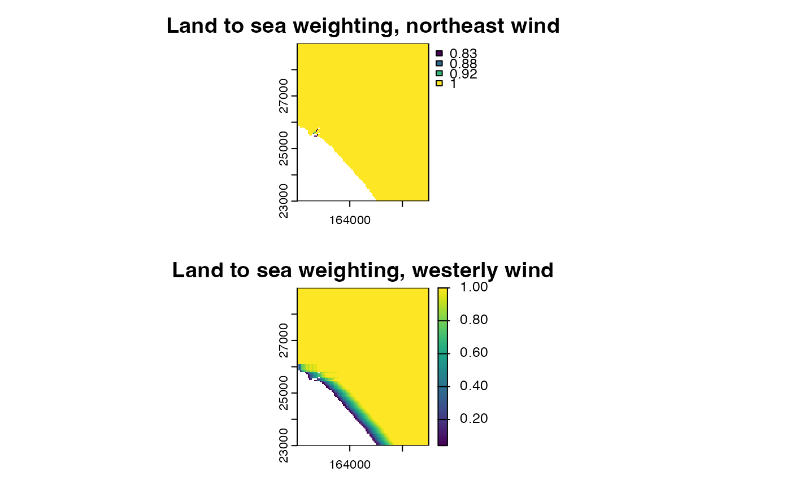

The function coastalexposure is used to calculate an inverse
distance^2 weighted ratio of land to sea in a specified upwind direction.
Arguments
- landsea
A SpatRast with NAs (representing sea) and any non-NA value (representing land). The object should have a larger extent than that for which land-sea ratio values are needed, as the calculation requires land / sea coverage to be assessed upwind outside the target area.
- e
a terra::ext object indicating the region for which land-sea ratios are required.
- wdir
an optional single numeric value specifying the direction (decimal degrees) from which the wind is blowing.
Value
a SpatRast of representing values ranging between zero (all upwind pixels sea) to one (all upwind pixels land).
Details
This function calculates a coefficient of the ratio of land to sea pixels in a specified upwind direction, across all elements of a SpatRast, weighted using an inverse distance squared function, such that nearby pixels have a greater influence on the coefficient.
Examples
climdata<-read_climdata(mesoclim::ukcpinput)
dtmf<-terra::rast(system.file('extdata/dtms/dtmf.tif',package='mesoclim'))
dtmm<-terra::rast(system.file('extdata/dtms/dtmm.tif',package='mesoclim'))
landsea<- terra::mask(terra::resample(dtmm,dtmf),dtmf)
#> Warning: [mask] CRS do not match
ce1 <- coastalexposure(landsea, terra::ext(dtmf), 45)
ce2 <- coastalexposure(landsea, terra::ext(dtmf), 270)
par(mfrow=c(2,1))
terra::plot(ce1, main = "Land to sea weighting, northeast wind")
terra::plot(ce2, main = "Land to sea weighting, westerly wind")
